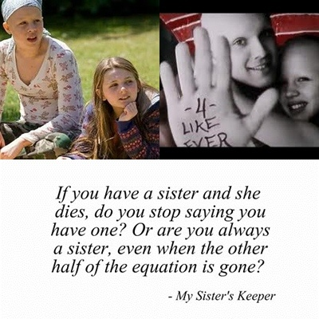
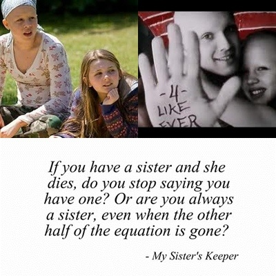

This is one of my favorite books because it shows how
hard it is for a child to be pressured into doing something
they don't want to do. It also shows how one decision can impact
many people at once.
 


This is another one of my favorite because it is about a
girl who lost everything and was struggling with the decision of whether
she had anything worth living for anymore. It showed how
hard it was for her to make this decision and all the thoughts that came to mind.


This one of my favorite books because it is about a girl
who has fragile bones and how this makes certain
tasks in her life more difficult. In addition, it shows how having a child with
a certain disability can result
in the parent making decisions that wouldn't
be made on a daily basis.